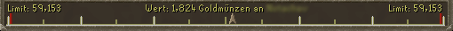

")
Handel
Einführung | Wie man handelt | Unausgewogene Transaktionen | Das Handelsfenster | Gegenstandsverleih
Einführung
Der Handel mit Gegenständen zwischen Spielern ist ein großer und wichtiger Teil des RuneScape-Erlebnisses.
Viele Gegenstände kann man nicht in Läden kaufen, sondern man muss nach ihnen suchen, man muss sie selbst herstellen oder sie anderen Spielern abkaufen.
Wie man handelt
Eine effektive Art und Weise zum An- und Verkauf von Gegenständen und Dienstleistungen ist die Markthalle. Mit ihrer Hilfe könnt ihr Gegenstände kaufen oder an andere Spieler verkaufen, die sich auf irgendeiner anderen Welt befinden. Ihr müsst nicht mal anwesend sein, während die Kauffrauen und -männer in der Markthalle jemanden finden, der den Gegenstand innerhalb der von euch angegebenen Preisspanne kaufen oder verkaufen möchte. Dieses System ist wirklich äußerst praktisch und zudem kann es auch von jeder Bank in RuneScape eingesehen werden.
Wenn ihr beim Handeln allerdings auf persönliche Interaktion Wert legt, stehen euch unsere Marktplatz-Foren zur Verfügung. Ihr könnt einen Beitrag in den dafür vorgesehenen Bereich schreiben, in dem ihr sagt, was ihr kaufen oder verkaufen wollt, und wie viel ihr dafür bezahlen oder verlangen möchtet. Als Mitglied könnt ihr euch unter folgendem Link ins Forum einloggen: Forum-Login. Falls es euch nicht möglich ist, Beiträge zu schreiben, könnt ihr immer noch die Beiträge von anderen Spielern lesen. Ihr erreicht das Forum auch über den Link 'Forum' auf der Startseite.
'Handel': Diese Schaltfläche bestimmt, ob andere Spieler einem Handelsangebote machen können. Ihr könnt hier wieder zwischen den Optionen An, Freunde und Aus wählen.
Schaltet die Option auf An, um mit beliebigen Spielern handeln zu können und auf Freunde, wenn ihr nur mit euren Freunden handeln möchtet.
Wenn ihr persönlich handeln wollt (also nicht die Markthalle benutzt), müsst ihr erst einen Käufer (oder Verkäufer) finden. Wenn ihr zum Beispiel gerade Kohle abgebaut habt und sie verkaufen wollt, könntet ihr euch auf einen gut besuchten Platz stellen und sagen: "Kohle zu verkaufen!"
Unausgewogene Transaktionen
Da alle Handelsvorgänge "ausgeglichen" sein müssen, könnt ihr einen Handel nur abschließen, wenn der Wert der Gegenstände auf beiden Seiten ungefähr gleich ist. Der Balken unten im Handelsfenster zeigt euch, wie ausgeglichen der Handel ist. Je näher der Pfeil an einem der Enden des Balkens steht, desto mehr Gewinn macht die entsprechende Seite mit dem Geschäft.

Ihr könnt alle 15 Minuten nur einen begrenzten Gewinn oder Verlust machen. Anfangs liegt das Limit für alle Spieler bei 5.000 Goldmünzen. Dieses Limit kann folgendermaßen gesteigert werden:
- Indem ihr eine bestimmte Anzahl an Abenteuern abschließt.
- Indem ihr euren Handelspartner für einen Monat oder länger auf der Freunde-Liste habt (und umgekehrt!).
Dein Handelslimit kann auf freien Welten bis auf 40.000 Goldmünzen ansteigen, auf Mitglieder-Welten sogar bis 240.000. In der unten stehenden Tabelle findet ihr eine genaue Aufstellung.
Der Wert, den ihr erhalten oder verlieren könnt, wird jede Minute neu berechnet, egal ob ihr auf RuneScape eingeloggt seid oder nicht. So wird sichergestellt, dass ihr alle 15 Minuten stets euer Handelsmaximum ausschöpfen könnt. Wie viel ihr mit eurem Handelspartner tauschen könnt, hängt auch davon ab, wie viel euer Partner an Wert verloren oder hinzugewonnen hat und wie groß sein eigenes Handelslimit (je nach Abenteuerpunkten) ist. Der Wert, den ihr verlieren könnt, wird mit dem Wert, den ihr hinzugewinnen könnt, verrechnet. So ist es möglich, mehrmals schnell hintereinander zu handeln.
Zum Beispiel: wenn Spieler A ein Handelslimit von 6.000 Goldmünzen hat und mit einer Transaktion 1.500 Münzen Gewinn macht, könnte er direkt danach einen Handel mit 6.000 Münzen Verlust abschließen. Direkt danach könnte er dann wiederum in einem Geschäft 2.000 Münzen Profit schlagen - nach diesen drei Transaktionen hat Spieler A unter dem Strich 500 Münzen Gewinn und könnte weiter handeln, bis er weitere 5.500 Münzen gewonnen hat.
| Abenteuerpunkte | Handelslimit (nicht auf Freunde-Liste) |
Handelslimit (Freunde seit 1 Monat) |
Handelslimit (Freunde seit 2 Monaten) |
Handelslimit (Freunde seit 3 Monaten oder mehr) |
| 0-10 | 5.000 GM | 10.000 GM | 15.000 GM | 20.000 GM |
| 34 | 10.076 GM* | 20.152 GM* | 30.228 GM* | 40.304 GM* |
| 75 | 18.750 GM | 37.500 GM | 56.250 GM | 75.000 GM |
| 150 | 34.615 GM | 69.230 GM | 103.845 GM | 138.460 GM |
| 225 | 50.480 GM | 100.960 GM | 151.440 GM | 201.920 GM |
| 270 | 60.000 GM | 120.000 GM | 180.000 GM | 240.000 GM |
*Spieler auf freien Welten, die 34 Abenteuerpunkte erreicht haben, haben ein maximales Handelslimit von 40.000 Goldmünzen pro 15 Minuten (dazu müssen sie mindestens drei Monate lang befreundet sein). Weiter lässt sich das Handelslimit auf freien Welten nicht steigern.
Wie ihr sehen könnt, erhöht sich der Betrag mit jedem Abenteuerpunkt zwischen 10 und 270. Euer Limit wird euch angezeigt, wenn ihr ein Handelsfenster öffnet.
Beachtet, dass Duelle mit Einsatz und die Rattengruben ebenfalls mit in diesen Wert eingerechnet werden.
Warum wir das Handeln zwischen Spielern auf diese Art regulieren, könnt ihr im Projekttagebuch RuneScape gegen Real-World Trading herausfinden.
Das Handelsfenster
Wenn ihr jemanden zum Handeln gefunden habt, klickt ihr mit der rechten Maustaste auf deren Namen und wählt die Option 'Handeln'. Der andere Spieler wird über eure Anfrage informiert. Um euer Handelsangebot anzunehmen, kann er auf euren Charakter rechtsklicken und ebenfalls die Option 'Handeln' auswählen.

Um einen Gegenstand zu eurem Angebot hinzuzufügen, müsst ihr nur in eurem Inventar darauf klicken. Wenn ihr mehrere Gegenstände auf einmal hinzufügen wollt (z.B. einen Stapel Münzen), klickt ihr mit der rechten Maustaste auf den entsprechenden Gegenstand und wählt dann die Option 'X anbieten' aus. So könnt ihr genau bestimmen, welche Anzahl ihr anbieten möchtet. Um einen Gegenstand wieder aus eurem Angebot zu entfernen, müsst ihr einfach im Angebotsfenster darauf klicken. Wenn ihr dies tut, wird euer Gegenüber ein rotes Ausrufezeichen sehen, das ihn darauf hinweist, dass ihr euer Angebot verändert habt.
Seid ihr mit dem Handelsangebot zufrieden, dann klickt auf die grüne Schaltfläche 'Annehmen'. Wenn ihr aus irgendeinem Grund nicht damit zufrieden seid, dann klickt auf die rote Schaltfläche 'Ablehnen', um den Handel abzubrechen.
Sobald ihr auf 'Akzeptieren' geklickt habt, müsst ihr warten, bis euer Handelspartner den Handel ebenfalls akzeptiert hat. Falls sie den Handel ändern, wird in dem Feld ein blinkendes Ausrufungszeichen angezeigt, wie im unten links stehenden Bild verdeutlicht.
Nachdem der Handelspartner akzeptiert hat, erscheint ein abschließender Bestätigungsbildschirm (siehe Abbildung rechts). Hier sind alle zu tauschenden Gegenstände noch einmal deutlich aufgelistet, sodass ihr eine letzte Chance bekommt, zu überprüfen, ob der Handel euren Wünschen entspricht. Es ist wichtig, dass ihr euch diese Informationen gut durchlest. Wenn ihr euch vergewissert habt, dass ihr mit allem zufrieden seid, dann klickt auf die grüne Schaltfläche 'Annehmen'.

|

|
Nicht vergessen: Falls ihr es euch später anders überlegt, ist es nicht mehr möglich, den Handel wieder rückgängig zu machen. Also Vorsicht! Es ist sehr riskant, jemandem Gegenstände als Gegenleistung für Informationen zu geben, oder sie anderen Spielern zu 'leihen' - bitte vergesst nicht, dass leider nicht alle Spieler auf RuneScape ehrlich sind, und dass ihr auf diese Weise eure Gegenstände verlieren könntet, ohne je etwas dafür zu bekommen! Wenn ihr vermeiden wollt, auf diese Art und Weise betrogen zu werden oder auf einfache Art größere Mengen an Gegenständen verkaufen möchtet, solltet ihr lieber die Markthalle benutzen.
Gegenstände verleihen
Der Gegenstandsverleih ist ein tolles System, mit dessen Hilfe ihr euren Freunden aushelfen könnt. Es gibt eine breite Palette an nützlichen Gegenständen, die ihr verleihen könnt, darunter viele der besten Waffen und Rüstungsgegenstände auf RuneScape.
Bitte beachtet, dass kein Gegenstand durch den Verleih 'verloren gehen' kann, da der Besitzer immer in der Lage sein wird, ihn sich zurückzuholen.
 Um jemanden einen Gegenstand zu leihen, müsst ihr den Gegenstand nur rechtsklicken, wenn das Handelsfenster auf ist und auf 'ausleihen' klicken. Klickt hier, um eine Liste der Gegenstände zu sehen, die ihr verleihen könnt.
Um jemanden einen Gegenstand zu leihen, müsst ihr den Gegenstand nur rechtsklicken, wenn das Handelsfenster auf ist und auf 'ausleihen' klicken. Klickt hier, um eine Liste der Gegenstände zu sehen, die ihr verleihen könnt. Wenn ihr eurem Handelspartner einen Gegenstand ausleihen wollt, seht ihr den Gegenstand im Fenster 'Leihen'. Jetzt könnt ihr auswählen, wie lange die Ausleihfrist sein soll, indem ihr die Dauer rechtsklickt.
- Bis zum Ausloggen
Euer Freund behält den Gegenstand, bis einer von euch sich aus dem Spiel ausloggt oder ihn aus den Leihsachen abholt (siehe 'Wie ihr euren Gegenstand abholt'). Wenn der andere sich ausloggt, werdet ihr informiert und erhaltet eine Nachricht, dass ihr den Gegenstand abholen könnt, indem ihr mit irgendeinem beliebigen Bankangestellten sprecht. Derjenige, der den Gegenstand von euch ausgeliehen hat, kann ihn auch zurückgeben, indem er ihn mit euch benutzt, sodass er wieder in eurem Inventar erscheint.
- Für 'X' Stunden
Wenn ihr einem Freund einen Gegenstand für eine bestimmte Anzahl an Stunden ausleiht, wird es nicht möglich sein, den Gegenstand vor Ablauf der Frist zurückzubekommen. 'X', also den Zeitraum - zwischen einer und 24 Stunden - des Verleihs, könnt ihr selbst unter 'Dauer angeben' auswählen. Der Leiher kann den Gegenstand nicht zurückgeben, bis die vereinbarte Zeit abgelaufen ist.

Sobald die Dauer bestimmt wurde, könnt ihr den Handel wie gewohnt abschließen. Der Verleih von Gegenständen unterliegt nicht den normalen Handelsbeschränkungen, da der Gegenstand nicht permanent gehandelt wird.
Wie ihr euren Gegenstand abholt

Ausleihbare Gegenstände
In Zukunft werden noch weitere Gegenstände zu dieser Liste hinzugefügt.Waffen
| Höllenpeitsche (engl. "abyssal whip") | |
| Uralter Stab | |
| Kompositbögen - Weide, Eibe und Magie | |
| Dunkelbogen | |
| Drachen-Axt, -Streitaxt, -Klauen, -Dolch (auch in vergiftetem Zustand), -Hellebarde, -Langschwert, -Streitkolben, -Krummsäbel, -Speer (auch in vergiftetem Zustand) und -Zweihänder | |
| Götterschwert (alle Ausführungen) | |
| Granit-Hammer | |
| Langbögen - Ahorn, Eibe und Magie | |
| Runit-Axt, -Streitaxt, -Stock, -Kampfklauen, -Dolch (auch in vergiftetem Zustand), -Hellebarde, -Langschwert, -Streitkolben, -Krummsäbel, -Speer (auch in vergiftetem Zustand), -Schwert, -Zweihänder und -Kriegshammer | |
| Runit-Armbrust | |
| Saradomin-Schwert | |
| Magierfluch | |
| Kurzbögen - Ahorn, Eibe und Magie | |
| Zamorak-Speer |
Rüstzeug
| Amulett des Zorns | |
| Schützen-Helm | |
| Ring des Bogenschützen | |
| Armadyl-Helm, -Plattenpanzer und -Plattenrock | |
| Bandos-Plattenpanzer, -Stiefel und -Plattenschurz | |
| Blutrausch-Helm | |
| Blutrausch-Ring | |
| Drachen-Stiefel, -Kettenhemd, -Vollhelm, -Halbhelm, -Plattenpanzer, -Plattenbeinlinge, -Plattenrock, -Vierecksschild | |
| Drachenleder - Drachenleder-Harnisch, -Beinlinge und -Armlinge in Grün, Blau und Rot | |
| Weitseher-Helm | |
| Götter-Rüstzeug - Guthix-, Saradomin- und Zamorak-Vollhelm, -Pentaschild, -Plattenpanzer, -Plattenbeinlinge und -Plattenrock | |
| Granit-Panzer, -Helm, -Beinlinge und -Schild | |
| Magier-Stiefel | |
| Mystik-Stiefel, -Handschuhe, -Hut, -Robenunterteil, -Robenoberteil (alle Ausführungen) | |
| Obsidian-Umhang | |
| Fernkämpfer-Stiefel | |
| Robin-Hood-Mütze | |
| Felskrabben-Helm, -Panzer, -Beinlinge, -Handschuhe und -Stiefel | |
| Runit-Stiefel, -Kettenhemd, -Vollhelm, -Pentaschild, -Halbhelm, -Plattenpanzer, -Plattenbeinlinge, -Plattenrock und -Vierecksschild (einschließlich der goldverzierten und vergoldeten Varianten, wo erhältlich) | |
| Ring des Sehers | |
| Wallasalki-Stiefel, -Unterteil, -Handschuhe, -Helm und -Oberteil | |
| Dagannoth-Harnisch, -Stiefel, -Beinlinge, -Handschuhe und -Helm | |
| Spaltrinden-Harnisch, -Stiefel, -Handschuhe, -Helm und -Beinlinge | |
| 3. ZA (Nahkampf-Rüstzeug des 3. ZA): Helm, Pentaschild, Plattenpanzer, Plattenbeinlinge | |
| 3. ZA (Magier-Rüstzeug des 3. ZA): Magier-Hut, Amulett, Robenoberteil und Robenunterteil | |
| 3. ZA (Fernkampf-Rüstzeug des 3. ZA): Nackenschutz, Harnisch, Beinlinge und Armlinge | |
| Krieger-Helm | |
| Ring des Kriegers |
Sonstiges
| Tiermasken (alle Varianten) | |
| Barett (alle Farben) | |
| Räubermaske mit Krempenhut | |
| Krempenhut (alle Farben) | |
| Schlaghosen | |
| Halloween-Maske (alle Farben) | |
| Stirnband (alle Farben) | |
| Räubermaske | |
| Beinkleider | |
| Partyhut (alle Farben) | |
| Gepuderte Perücke | |
| Weihnachtsmannmütze | |
| Schlafmütze | |
| Zylinderhut |
Fragen und Antworten zum Gegenstandsverleih
Wie viele Gegenstände kann ich jeweils verleihen und ausleihen?Man kann jeweils einen Gegenstand verleihen und ausleihen. Das heißt, ihr könnt einem Freund einen Gegenstand geben und euch gleichzeitig von jemand anderem einen Gegenstand ausleihen und umgekehrt.
Wo kann ich einen ausgeliehenen Gegenstand nicht mit hinnehmen?
Zusätzlich gibt es noch ein paar Gebiete, in denen ihr euch einen Gegenstand nicht ausleihen oder ihn verleihen könnt:
- Duell-Arena und Duell-Turniere
- Die Kammer von Koschei dem Unsterblichen, unterhalb von Rellekka
- Angriffsarena der Barbaren
- Die Tränen des Guthix
- Spielerkampf- und Wildnis-Welten
Mein Freund sagt, dass er seinen Gegenstand zurückbekommen hat, aber es ist immer noch in meinem Inventar.
Die Timer im Spiel sind bis auf eine Minute genau. Aus diesem Grund kann es sein, dass Gegenstände an zwei Orten gleichzeitig erscheinen, bevor die Frist abgelaufen ist und alles wieder zur Normalität zurückkehrt.
Mein Freund sagt, dass der Gegenstand, den ich ihm geliehen habe, weg ist, aber ich habe ihn noch nicht. Hilfe!
Genau wie sonst sind unsere Timer bis auf eine Minute genau. Es könnte passieren, dass ein Gegenstand innerhalb dieser Zeitspanne verschwindet, bevor der Timer abgelaufen ist und alles wieder zur Normalität zurückkehrt.

Weitere Artikel in Steuerung
|
|
|
Weiterführende Informationen Wenn euch dieser Artikel nicht weitergeholfen hat, könnt ihr in den folgenden Kapiteln der RuneScape-Webseite mehr Informationen finden:
|
|